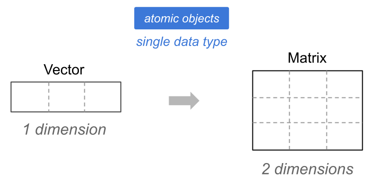

7 Matrices and Arrays
In this chapter we introduce R arrays, which are multidimensional
data objects including 2-dimensional arrays better known as matrices, and
N-dimensional arrays (generic arrays).
7.1 Motivation
Let us continue discussing the savings-investing scenario in which you deposit $1000 into a savings account that pays you an annual interest rate of return of 2%.
Assuming that you leave that money in the bank for several years, without changing the rate of return \(r\), you can use the Future Value (FV) formula to calculate how much money you’ll have at the end of year \(t\):
\[ \text{FV} = \text{PV} (1 + r)^t \]
where:
- \(\text{FV}\) = future value
- \(\text{PV}\) = present value
- \(\text{r}\) = annual interest rate
- \(\text{t}\) = number of years
Here’s some R code to obtain a vector amounts containing the amount of money
that you would have at the end of every year during a 5 year period:
# inputs
deposit = 1000
rate = 0.02
years = 1:5
# future values
amounts = deposit * (1 + rate)^years
amounts
#> [1] 1020.000 1040.400 1061.208 1082.432 1104.081Recall that this code is an example of vectorized (and recycling) code because the FV formula is applied to all the elements of the involved vectors, some of which have different lengths.
So far, so good.
Now, consider a seemingly simple modification. What if you want to organize the amount values in a table? Something like this:
| year | amount |
|---|---|
| 0 | 1000.000 |
| 1 | 1020.000 |
| 2 | 1040.400 |
| 3 | 1061.208 |
| 4 | 1082.432 |
| 5 | 1104.081 |
In other words, what if you are interested not in getting the set of future values in a vector, but instead you want them to be arranged in some sort of tabular object? How could you create a table in which the first column corresponds to the years and the second column corresponds to the future amounts? Well, let’s find out.
7.2 Tables with Matrices
R provides two main ways to organize data in a tabular (i.e. rectangular) object
using an R
matrixusing an R
data.frame
Let’s talk about the first one.
7.2.1 R Matrices
R matrices are rectangular arrays
While vectors are one-dimensional objects, matrices are two-dimensional objects
Matrices are also atomic objects (all their elements must be of the same type)

Column binding vectors
You can build a matrix by column binding vectors using the function
cbind():
# inputs
deposit = 1000
rate = 0.02
years = 0:5
# future values
amounts = deposit * (1 + rate)^years
# output as a matrix via cbind()
savings = cbind(years, amounts)
savings
#> years amounts
#> [1,] 0 1000.000
#> [2,] 1 1020.000
#> [3,] 2 1040.400
#> [4,] 3 1061.208
#> [5,] 4 1082.432
#> [6,] 5 1104.081As you can tell, the use of cbind() is straightforward. All you have to do
is indicate the name of the vectors, separating them with a comma. Each vector
will become a column of the returned matrix.
Row binding vectors
You can also build a matrix by row binding vectors.
savings = rbind(years, amounts)
savings
#> [,1] [,2] [,3] [,4] [,5]
#> years 0 1 2.0 3.000 4.000
#> amounts 1000 1020 1040.4 1061.208 1082.432
#> [,6]
#> years 5.000
#> amounts 1104.081The difference between cbind() and rbind() is that the latter will “stack”
the given vectors on top of each other. That is, each vector will become a row
of the returned matrix.
7.3 Creating matrices with matrix()
More commonly, you use the function matrix() to create a matrix by providing
an input vector, and defining the number of rows and columns
(i.e. the matrix dimensions).
savings = matrix(c(years, amounts), nrow = 6, ncol = 2)
savings
#> [,1] [,2]
#> [1,] 0 1000.000
#> [2,] 1 1020.000
#> [3,] 2 1040.400
#> [4,] 3 1061.208
#> [5,] 4 1082.432
#> [6,] 5 1104.081The input vector c(years, amounts) is arranged into 6 rows and 2
columns.
Giving names to rows and columns
Often, you may need to provide names for either rows and columns
savings = matrix(c(years, amounts), nrow = 6, ncol = 2)
rownames(savings) = 1:6
colnames(savings) = c("year", "amount")
savings
#> year amount
#> 1 0 1000.000
#> 2 1 1020.000
#> 3 2 1040.400
#> 4 3 1061.208
#> 5 4 1082.432
#> 6 5 1104.0817.3.1 More Matrices
Let’s make things a bit more complex. Say you have the following investments:
$1000 in a savings account that pays 2% annual return, during 4 years
$2000 in a money market account that pays 2.5% annual return, during 2 years
$5000 in a certificate of deposit that pays 3% annual return, during 3 years
In R, we can calculate the future values of each type of investment product:
# savings account
savings = 1000 * (1 + 0.02)^(0:4)
savings
#> [1] 1000.000 1020.000 1040.400 1061.208 1082.432# money market
moneymkt = 2000 * (1 + 0.025)^(0:2)
moneymkt
#> [1] 2000.00 2050.00 2101.25# certificate of deposit
certificate = 5000 * (1 + 0.03)^(0:3)
certificate
#> [1] 5000.000 5150.000 5304.500 5463.635Separated matrices
We can create individual matrices:
sav_mat = cbind(0:4, savings)
mm_mat = cbind(0:2, moneymkt)
cd_mat = cbind(0:3, certificate)Or we can stack everything into a single matrix:
cbind(c(0:4, 0:2, 0:3), c(savings, moneymkt, certificate))
#> [,1] [,2]
#> [1,] 0 1000.000
#> [2,] 1 1020.000
#> [3,] 2 1040.400
#> [4,] 3 1061.208
#> [5,] 4 1082.432
#> [6,] 0 2000.000
#> [7,] 1 2050.000
#> [8,] 2 2101.250
#> [9,] 0 5000.000
#> [10,] 1 5150.000
#> [11,] 2 5304.500
#> [12,] 3 5463.635What if you want some table like this:
| account | year | amount |
|---|---|---|
| savings | 0 | 1000.000 |
| savings | 1 | 1020.000 |
| savings | 2 | 1040.400 |
| savings | 3 | 1061.208 |
| savings | 4 | 1082.432 |
| moneymkt | 0 | 2000.000 |
| moneymkt | 1 | 2050.000 |
| moneymkt | 2 | 2101.250 |
| certif | 0 | 5000.000 |
| certif | 1 | 5150.250 |
| certif | 2 | 5304.500 |
| certif | 3 | 5463.635 |
We could use the cbind() function in an attempt to obtain a matrix having
a similar rectangular structure as in the above table:
investments = cbind(
rep(c("savings", "moneymkt", "certif"), times = c(5, 3, 4)),
c(0:4, 0:2, 0:3),
c(savings, moneymkt, certificate))
investments
#> [,1] [,2] [,3]
#> [1,] "savings" "0" "1000"
#> [2,] "savings" "1" "1020"
#> [3,] "savings" "2" "1040.4"
#> [4,] "savings" "3" "1061.208"
#> [5,] "savings" "4" "1082.43216"
#> [6,] "moneymkt" "0" "2000"
#> [7,] "moneymkt" "1" "2050"
#> [8,] "moneymkt" "2" "2101.25"
#> [9,] "certif" "0" "5000"
#> [10,] "certif" "1" "5150"
#> [11,] "certif" "2" "5304.5"
#> [12,] "certif" "3" "5463.635"Do you notice something funny with the matrix investments?
As you can tell, all the values in investments are displayed being surrounded
with double quotes. This indicates that all the values are of type character.
Why?
Recall that matrices are atomic objects. Therefore, all the values in a
matrix must be of the same data type. In this example, because the first
input vector to cbind() is a character vector, this will dictate the type
flavor of the produced matrix investments.